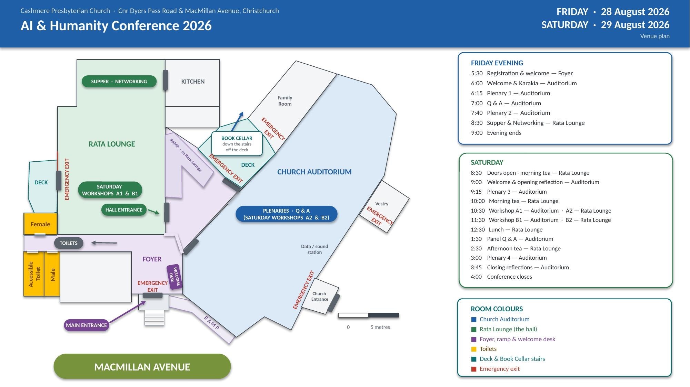
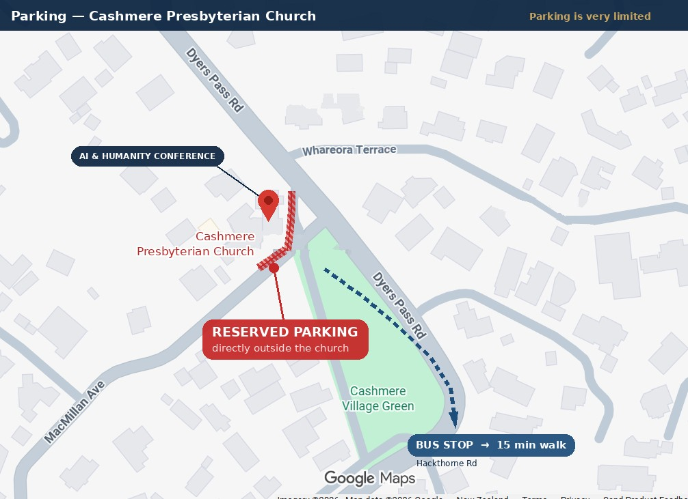

Refreshments — Friday
Light supper at 8:30 PM.
Refreshments — Saturday
Morning and afternoon tea; light lunch.
Dr Stephen Garner is a Senior Research Fellow at Laidlaw College, New Zealand's largest interdenominational Christian college. He holds a PhD from the University of Auckland, an MSc in Computer Science, and worked extensively in the information technology sector before entering theological studies.
This rare dual background — as both a technologist and a theologian — makes him an exceptionally well-suited keynote for an audience spanning faith and non-faith communities.
Laidlaw College profileDr Matthew Galloway is the Learning Designer for the Ethical Use of AI at the Centre for Academic Development, Victoria University of Wellington. His role sits at the intersection of education, technology and ethics — specifically designing frameworks and workshops that help people engage AI tools responsibly, accurately and critically.
He is actively engaged in applied AI ethics and has led workshops on ethical AI use in higher education contexts.
matthew-galloway.co.nzProfessor of Education and co-director of the UC Digital Futures Lab, Kathryn MacCallum is recognised in Aotearoa and abroad for her leadership of research and teaching in AI literacy and assessment.
Her perspective on how learners and educators understand, use, critique and govern AI systems foregrounds Indigenous perspectives and addresses gaps in dominant global AI narratives that often marginalise the cultural, ethical and relational dimensions of learning.
University of Canterbury profileEmma Humphrey is an AI Safety Specialist, educator and social entrepreneur dedicated to helping organisations and communities navigate the rapid evolution of artificial intelligence safely, ethically and resiliently — equipping society with the critical thinking, processes and tools necessary to harness technology responsibly without losing sight of human safety and ethics.
Her work addresses pressing contemporary issues such as over-trust in AI models and automation bias, cybersecurity vulnerabilities, and threats to Māori data sovereignty.
Her career in data science is rooted in an academic background in Physics and Applied Mathematics, with hands-on expertise as an AI consultant for the UK Home Office. Emma shares practical case studies and forward-looking insights to help everyday people and businesses build resilience against over 1,700 identified AI risks.
TechStep profileSession A · Saturday 10:30 AM
- CV Bias
- Data on health platforms
- Code control
- Information to third parties
- Cybersecurity
- Job insecurity
- Environmental harms
- Deepfakes
- Facial recognition software
Session B · Saturday 11:30 AM
- AI literacy vs digital literacy
- Why it matters for educators
- Framework for supporting educators in age of AI
Venue
Cashmere, Christchurch 8022, New Zealand
“The Stone Church on the Hill” has served its community in Christchurch for nearly 100 years — a centre for worship and celebration, and a hub for community events.
Venue plan

Parking

Coming by bus
Metro Route 1 (Blue Line) runs to Cashmere roughly every 30 minutes, via the Bus Interchange, Sydenham and Princess Margaret Hospital. The nearest stop is at Dyers Pass Road and Hackthorne Road, about a 15-minute walk from the church.
NB Friday: the last bus back leaves Cashmere at 7:34 PM.
Route 1 does run close to midnight, but only as far as Princess Margaret Hospital on Cashmere Road.
Plan your trip
Metro journey planner Route 1 (Blue Line) timetable Walking route to the bus stopFact sheet
Sat 29 Aug, 9:00 AM–4:00 PM
Saturday doors open 8:30 AM
Nearest stop: Hackthorne Road — about a 15-minute walk.
Last bus from Cashmere: 7:34 PM weekdays, 7:04 PM Saturday.
Workshops A1 and B1, and all refreshments, are in the Rata Lounge.